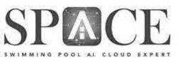

Trade Mark Journal No.2025/036 5 September 2025
UK00004222325 20 June 2025 (1,9,11,37,40,42)
Mark 1
Mark 2

- Class 1
- Flocculants; Oxidizing agents; Catalytic agents; Chemicals for use in swimming pools; Water treatment chemicals for use in swimming pools; Chemical analysis kit for testing swimming pool water; Chlorine for swimming pools; Water purifying chemicals for swimming pools; Chemical preparations for testing swimming pool water; Water treatment minerals for use in swimming pools and spas; Industrial minerals; Additives (Chemical -) for use in the disinfection of water; Chemical products for the treatment of drinking water.
- Class 9
- Software; Computer software; software applications; Operating software; Downloadable software; Application software; Downloadable computer software; artificial intelligence and machine learning software; Artificial intelligence software for analysis; artificial intelligence software; computer software for use as an application programming interface (API); Internet of Things [IoT] gateways; Internet of Things [IoT] sensors; System and system support software, and firmware; Software for monitoring, analysing, controlling and running physical world operations; scientific apparatus and instruments; Detection apparatus; Sensors, detectors and monitoring instruments; Measuring, detecting, monitoring and controlling devices; testing and quality control devices.
- Class 11
- Water filters; water filtering apparatus; water filtering installations; water filtering units; Water treatment filters; Filters for water purifiers; Filters for swimming pools; Electrostatic filters for water filtration; Power filters for water purification [other than machines]; Ultraviolet sterilization units [water treatment equipment]; Cartridge filtration units [water treatment equipment]; Chemical sterilization units [water treatment equipment]; Air or water (Ionization apparatus for the treatment of -); water treatment units for aerating and circulating water; Installations for water treatment under osmotic process; Filters for drinking water; Apparatus for filtering drinking water; Chemical installations for conditioning drinking water; Aquarium filtration apparatus; Aquarium sea water purifying apparatus; Water filtering units for aquariums; Filters for waste gas purification; Water filtering apparatus for industrial use; Supply air diffusers; Filters for use with apparatus for water supply.
- Class 37
- Building construction; Swimming pool maintenance; Swimming pool cleaning services; Maintenance of aquariums; Maintenance of water purifying apparatus; Providing information relating to the repair or maintenance of water purifying apparatus; Installation of environmental protection systems; Installation of environmental control systems; Repair of water supply installations; Repair of water purifying apparatus; Repair or maintenance of water pollution control equipment; Electric appliance installation and repair; Advisory services relating to the maintenance of environmental control systems; Installation of environmental engineering systems.
- Class 40
- Water treatment and purification; Water treatment [demineralising] services; Providing information relating to water treatment; consultancy in the field of water treatment; Waste water treatment; Soil, waste or water treatment services [environmental remediation services]; Water treating.
- Class 42
- Scientific and technological services; software as a service (SaaS); Platform as a service[PaaS]; IT-services; Design, development and programming of computer software; application service provider services; cloud computing services; platforms for artificial intelligence as software as a service [SaaS]; software as a service (SaaS) platform for swimming pool management; AI-powered cloud service for managing and optimizing swimming pool operations, including water quality monitoring, predictive maintenance, and energy-efficient control of filtration and heating systems; integration of IoT sensors with artificial intelligence for real-time data analysis.
Dryden Aqua Limited
Representative: Stevens Hewlett & Perkins